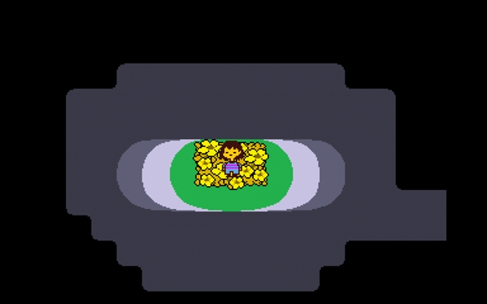
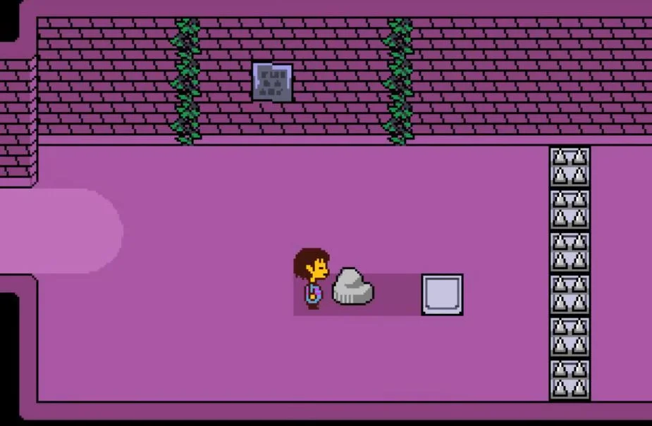
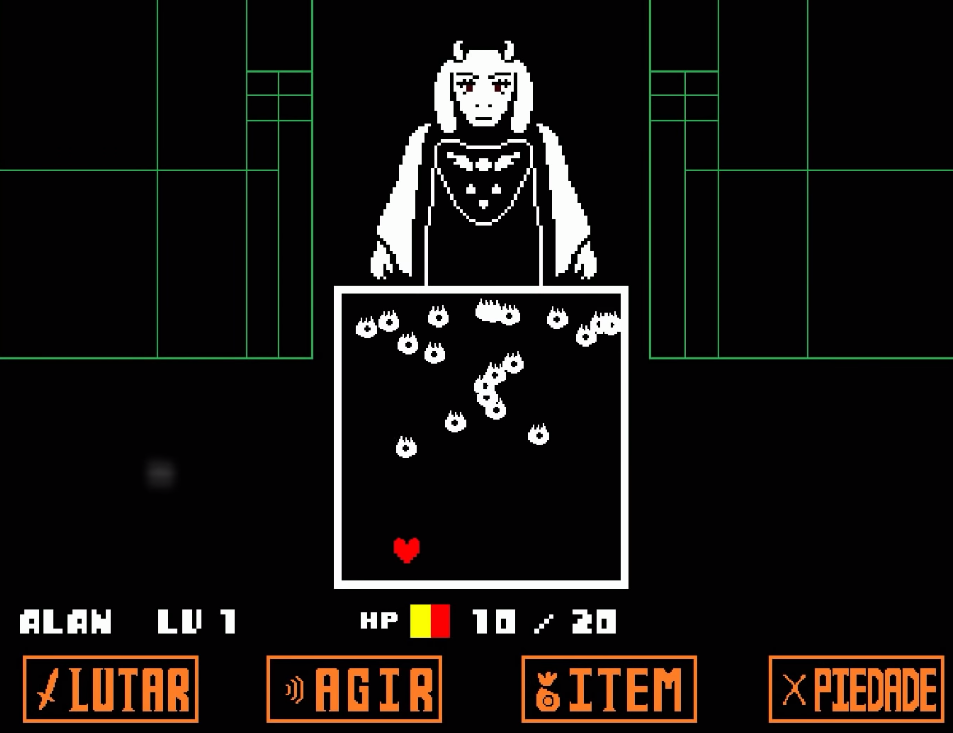
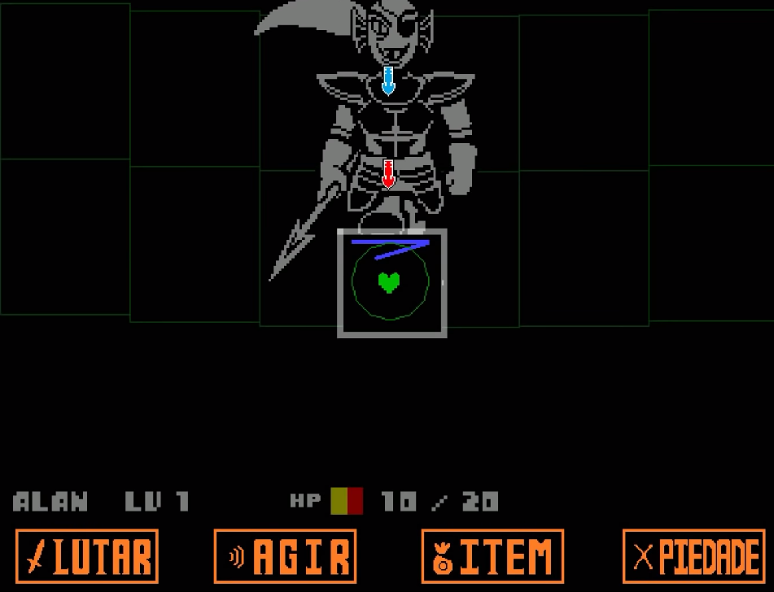
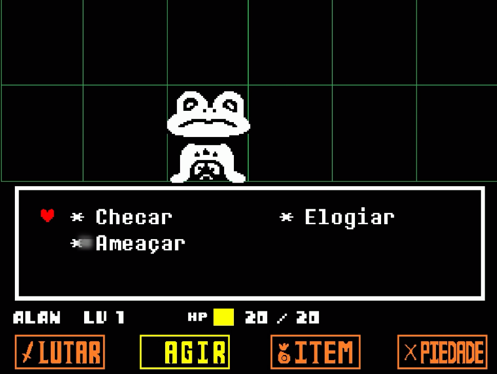
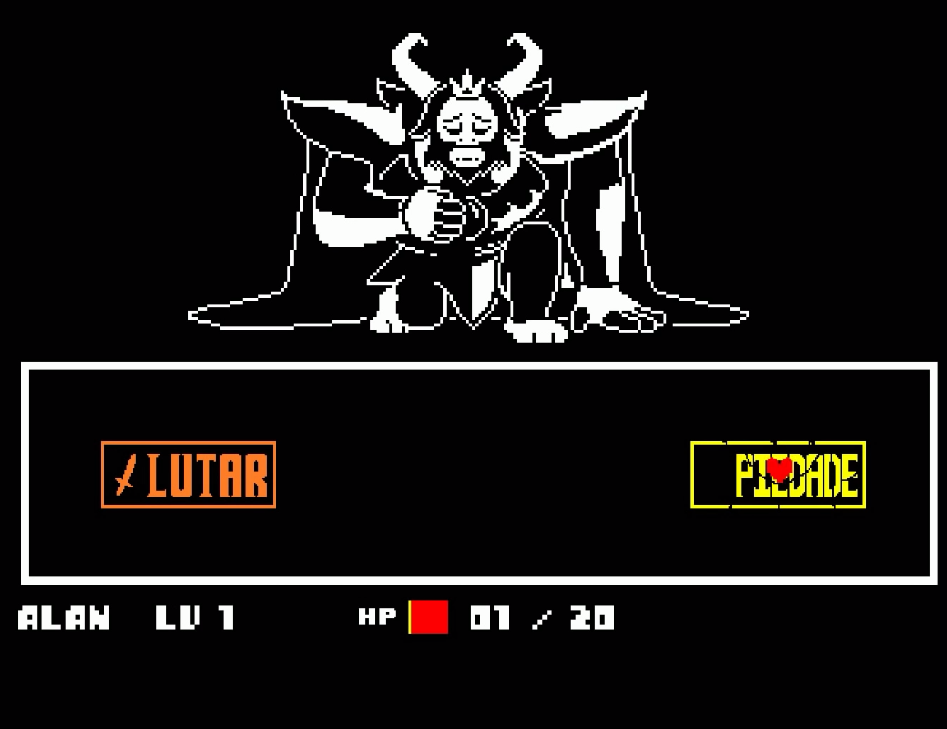

Undertale é um RPG que usa uma perspectiva de cima para baixo. Nele, o jogador controla uma criança e completa objetivos para progredir na história.

Ele explora um mundo subterrâneo repleto de cidades e cavernas, e é obrigado a resolver vários quebra-cabeças em sua jornada.

O mundo subterrâneo é o lar de monstros, muitos dos quais desafiam o humano em combate; o jogador decide se quer matar, fugir ou fazer amizade com eles. Durante as batalhas, ele controla um pequeno coração que representa sua alma, e devem evitar os ataques desencadeados pelo monstro adversário de forma similar a um shooter bullet hell.

Enquanto o jogo avança, novos elementos são introduzidos, como obstáculos coloridos e batalhas com chefes que mudam a forma como o coração é controlado.

O jogador pode escolher atacar o inimigo, o que envolve o pressionamento de botões no tempo correto. Matar inimigos fará com que o protagonista ganhe EXP (por sua vez aumentando seu LOVE) e ouro.

Ele pode usar a opção ACT para executar várias ações, que variam dependendo do inimigo.

Se o protagonista usar as ações corretas para responder ao inimigo, ou atacá-lo até que ele tenha o HP baixo (mas ainda vivo) ele pode poupá-lo e terminar a luta sem matá-lo.

Para que alguns encontros com chefes sejam concluídos pacificamente, o jogador é obrigado a sobreviver até que o personagem que eles estão enfrentando tenha terminado seu diálogo. O RPG apresenta múltiplos ramos e finais na história, dependendo de escolhas que envolvem matar ou poupar os inimigos; e, como tal, é possível concluí-lo sem matar ninguém.

Fonte de informação